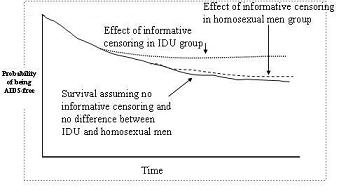
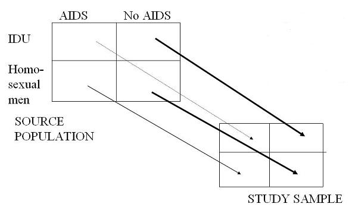

Example: Selection Bias - Loss to Follow-Up - AIDS
Lead Author(s): Jeff Martin, MD
Losses to follow-up are a grave problem in AIDS studies.
Progression to AIDS
Consider a cohort study looking at progression to AIDS (as shown in the Kaplan-Meier curves below),
- comparing two major HIV-risk groups: injection drug users and homosexual men.
This is pertinent because there has been a lot of interest in whether the way you got HIV (parenterally or via sex) influences your initial inoculum of virus (and host immune response) and ultimately your disease course.
Setting for Selection Bias
In a study like this, all the ingredients are present for selection bias, the perfect storm.
- This is because it is easy to see that getting sick is a reason for becoming lost to follow-up; you just don't feel well enough to come back for study visits. Therefore, you would agree that persons who are lost to follow up have a different AIDS incidence than those that remain. This is informative censoring.
More IDU Lost to Follow-Up
Assume also that injection drug users (IDU) are more likely to become lost to follow up at any given level of feeling sick because of less social support and more chaotic lives.
- Therefore, this means that the frequency of informative censoring differs across the exposure groups (IDU vs homosexual men) and it is more common in the IDU group.
- The result of all of this is selection bias: there is an underestimation of the incidence of AIDS in IDU relative to homosexual men.
Kaplan-Meier Curve
Thus, this is what a Kaplan-Meier curve would look like.
- The dark curve is what we would see if there was no informative censoring going on AND there was no difference between IDU and homosexual men in the incidence of AIDS.
- In other words, there would be superimposable curves.
- But now enter loss to follow-up and informative censoring.
- The effect of this informative censoring is to underestimate AIDS incidence. The effect in the homosexual group is slightly above the one with no informative censoring.
- The end result is the appearance that the IDU group has a slower progression to AIDS - all because of selection bias.

Schematic for Loss to Follow-Up
You can see effect of selection bias schematically in the diagram below.
- Because of the selective drop out of the IDU group with AIDS, this cell is underrepresented in the study sample.
- The end result is spurious underestimation of AIDS incidence in the IDU group relative to the homosexual male group.
